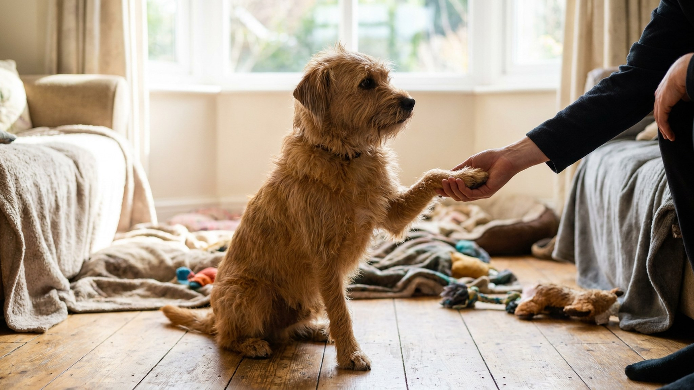

«Дай лапу» за 7 дней: методика и зачем это вообще нужно

9 июня 2026 · 7 минут чтения · Дрессировка · Уход · Собаки
Стрижка когтей у большинства собак — целое приключение с убеганием и сопротивлением. Команда «дай лапу», которую многие считают просто трюком для гостей, на самом деле решает эту проблему напрямую: собака учится добровольно давать лапу человеку и терпеть прикосновения к ней. Вот методика без принуждения — за 7 дней коротких сессий.
🐾 Первая помощь — всегда под рукой
AnimaLife подскажет, что делать в тревожной ситуации с питомцем ещё до визита к врачу. Откройте в один тап.
Открыть AnimaLife → Открыть в MAX →
Почему «дай лапу» — это не просто трюк
Лапы — одно из самых чувствительных мест у собаки. Там сосредоточено много нервных окончаний, и многие собаки инстинктивно защищают лапы от прикосновений. Именно поэтому стрижка когтей, осмотр подушечек и обработка лапы после прогулки так часто вызывают сопротивление.
Трюк «дай лапу» решает эту проблему через положительный опыт: собака сама кладёт лапу в руку человека и получает за это вознаграждение. Со временем прикосновение к лапам ассоциируется не с угрозой, а с хорошим событием. Это не магия — это классическая контробусловленность.
Дополнительные бонусы:
- Ветеринару проще осматривать лапы собаки, которая умеет эту команду.
- После прогулок по грязи удобнее вытирать лапы — собака подаёт их по команде.
- Это хорошее упражнение на контакт и концентрацию внимания на хозяина.
Что нужно для обучения: метод +R
+R (positive reinforcement, позитивное подкрепление) — метод, при котором желательное поведение вознаграждается. Собака повторяет то, что приносит ей что-то хорошее. Никаких коррекций, нажима, наказаний. Только поощрение нужного поведения.
Вам понадобится:
- Вкусное лакомство (маленькие кусочки, которые собака ест быстро — за 1–2 секунды).
- Кликер (опционально, но ускоряет обучение — точный маркер момента правильного действия).
- Спокойное место без отвлечений, особенно в первые дни.
- Сессии по 3–5 минут, 2–3 раза в день. Не дольше — собака устаёт ментально.
День 1–2: лапа сама тянется к руке
Цель первых двух дней — не требовать движения, а спровоцировать его естественно.
- Сядьте напротив собаки. Зажмите лакомство в кулаке и поднесите кулак к уровню её лапы.
- Собака будет нюхать, лизать, пытаться открыть кулак. Ждите терпеливо.
- Как только собака случайно заденет кулак лапой — сразу кликните (или скажите «да!») и откройте кулак, дайте лакомство.
- Повторите 5–8 раз за сессию. Собака начнёт понимать: прикосновение лапой = открывается кулак.
День 3–4: добавляем ладонь
- Вытяните ладонь открытой стороной вверх на уровне лапы собаки. Пусто, без лакомства в ладони.
- Большинство собак после предыдущих дней уже понимают: лапа + рука = что-то хорошее. Собака начнёт класть лапу в ладонь.
- Как только лапа касается ладони — кликните и дайте лакомство из другой руки.
- Повторите 5–8 раз. Постепенно добавляйте лёгкое пожатие — удерживайте лапу в руке 1–2 секунды, затем отпускайте и хвалите.
День 5–6: добавляем команду
- Перед тем как протянуть ладонь, скажите «лапу» (или «дай лапу» — выберите одно слово/фразу и не меняйте).
- Протяните ладонь сразу после команды. Собака кладёт лапу — кликните, похвалите, дайте лакомство.
- Через несколько повторений попробуйте только команду — без протянутой руки первые 2 секунды. Если собака начинает поднимать лапу — отличный сигнал, что слово начало работать.
День 7 и далее: закрепление и усложнение
- Продолжайте тренировки в разных местах — не только дома, но и на прогулке, у ветеринара (на приёме, до осмотра).
- Постепенно увеличивайте время удержания лапы в руке: 2 секунды → 5 → 10. Между пожатиями хвалите, не ждите конца долгой паузы.
- Добавьте имитацию осмотра: держите лапу, слегка трогайте когти пальцами, обозначайте движение ножниц. Собака учится не бояться этого контекста.
- Плановая стрижка когтей: начинайте с одного когтя за сессию, если собака плохо переносит. Командой «лапу» вы уже выстроили необходимое доверие.
Типичные ошибки при обучении
- Хватать лапу силой. Если собака убирает лапу — не удерживайте. Ждите добровольного движения. Принуждение разрушает доверие и откатывает прогресс.
- Слишком долгие сессии. 3–5 минут — максимум. Заканчивайте на успехе, пока собака ещё вовлечена.
- Нерегулярность. Пропуск 3+ дней сильно замедляет обучение. Лучше 3 минуты каждый день, чем 30 минут раз в неделю.
- Повторять команду несколько раз. Скажите один раз и ждите. Если повторять «лапу-лапу-лапу», собака научится реагировать только на третье повторение.
Как перейти от «дай лапу» к спокойной стрижке когтей
Когда собака уверенно выполняет команду, постепенно вводите инвентарь:
- Неделя 2: держите коготрез в руке, пока делаете «дай лапу» — не стрижёте, просто держите.
- Неделя 3: прикоснитесь коготрезом к одному когтю, немедленно похвалите. Не стрижёте.
- Неделя 4: подстригите один коготь, дайте лакомство, закончите сессию. Одного когтя достаточно для первого раза.
- Постепенно увеличивайте число когтей за одну сессию, всегда заканчивая до того, как собака начнёт сопротивляться.
🐾 Экономьте на лишних визитах к врачу
Сначала спросите AI-ветеринара в AnimaLife — часто этого достаточно, чтобы понять, нужен ли визит к врачу.
Спросить бесплатно → Спросить в MAX →
🐾 Понравился разбор?
Подпишитесь на канал — каждый день разбираем по одному тревожному симптому у кошек и собак: что в пределах нормы, а когда пора к врачу. Подпишитесь, чтобы не пропустить разбор, который может спасти здоровье вашего питомца.
← Все статьи · Открыть AnimaLife в Telegram · RSS